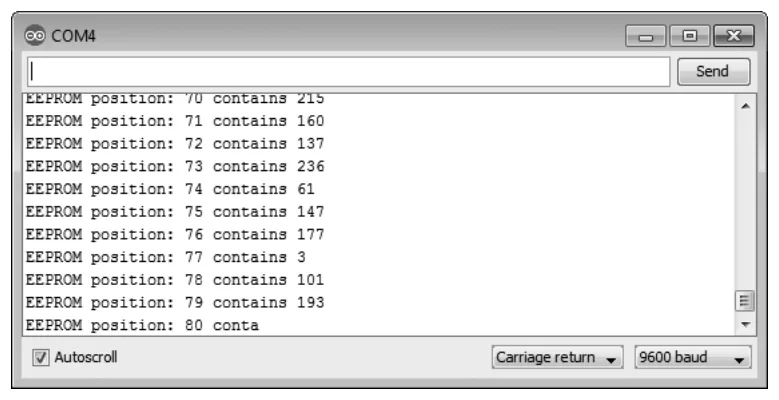

When you define and use a variable in your Arduino sketches, the stored data lasts only until the Arduino is reset or the power is turned off. But what if you want to keep the values for future use, such as in the user-changeable secret code for the numeric keypad in Chapter 9? That’s where the EEPROM (electrically erasable read-only memory) comes in. The EEPROM stores variables in memory inside an ATmega328 microcontroller, and the variables aren’t lost when the power is turned off.
The EEPROM in the Arduino can store 1,024-byte variables in positions numbered from 0 to 1,023. Recall that a byte can store an integer with a value between 0 and 255, and you begin to see why it’s perfect for storing RFID tag numbers. To use the EEPROM in our sketches, we first call the EEPROM library (included with the Arduino IDE) using the following:
#include <EEPROM.h>Then, to write a value to the EEPROM, we simply use this:
EEPROM.write(a, b);Here, a is the position in which the value (which falls between 0 and 1,023) will be stored, and b is the variable holding the byte of data we want to store in the EEPROM position number a.
To retrieve data from the EEPROM, use this function:
value = EEPROM.read(position);This takes the data stored in EEPROM position number position and stores it in the variable value.
Reading and Writing to the EEPROM
Here’s an example of how to read and write to the EEPROM. Enter and upload Listing 16-2.
// Listing 16-2
#include <EEPROM.h>
int zz;
void setup()
{
Serial.begin(9600);
randomSeed(analogRead(0));
}
void loop()
{
Serial.println("Writing random numbers...");
for (int i = 0; i < 1024; i++)
{
zz = random(255);
❶ EEPROM.write(i, zz);
}
Serial.println();
for (int a = 0; a < 1024; a++)
{
❷ zz = EEPROM.read(a);
Serial.print("EEPROM position: ");
Serial.print(a);
Serial.print(" contains ");
❸ Serial.println(zz);
delay(25);
}
}In the loop at ❶, a random number between 0 and 255 is stored in each EEPROM position. The stored values are retrieved in the second loop at ❷, to be displayed in the Serial Monitor at ❸.
Once the sketch has been uploaded, open the Serial Monitor and you should see something like Figure 16-6.

Now you’re ready to create a project using the EEPROM.